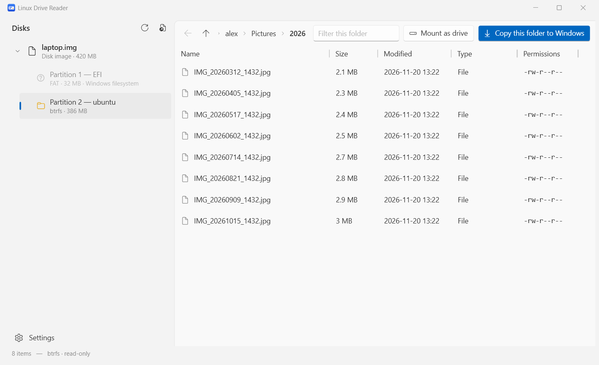
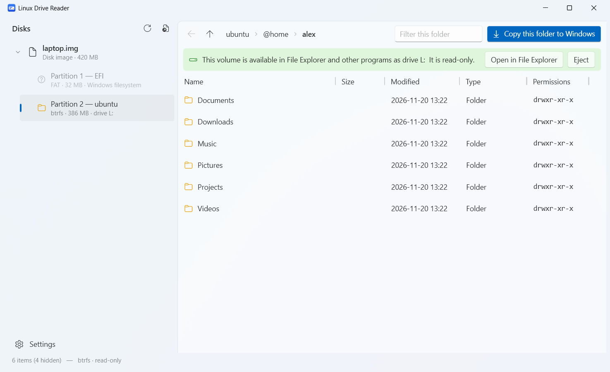

ext2 · ext3 · ext4
SupportedThe default on Ubuntu, Debian and most distributions. All current layouts, including inline data, bigalloc and 64-bit volumes.
Free · Open source · Windows 11
Browse ext4, btrfs and xfs drives, including LUKS-encrypted and LVM ones, copy files off them, or mount them as a drive letter. No WSL, no drivers, and your disk is only ever read.

Features
Every disk Windows can see is listed with its partitions and what's on them. Open a partition and browse it like a folder.

Select an encrypted partition and type its password. The volumes inside appear underneath it, ready to open.

One click gives the partition a drive letter. File Explorer, Office, photo viewers and every other program can open the files directly.


Formats
The default on Ubuntu, Debian and most distributions. All current layouts, including inline data, bigalloc and 64-bit volumes.
The default on Fedora and openSUSE. Subvolumes, snapshots, and zstd, LZO or zlib compression. Every file is checked against its stored checksum.
The default on RHEL, Rocky and AlmaLinux. Both the current v5 format and the older v4.
Full-disk encryption. Unlocked with your password; AES, which every distribution uses by default.
Logical volumes, typically inside an encrypted partition. Volumes that sit on a single disk.
GPT, MBR with logical partitions, or a filesystem written straight onto the disk.
f2fs, ZFS, btrfs or LVM spread over several disks, and writing. These are still detected and named in the disk list.
Compare
Each approach has a place. This one trades write access for having nothing to install and nothing that can damage the disk.
| Linux Drive Reader | WSL (wsl --mount) | A filesystem driver | |
|---|---|---|---|
| Installs | One program | WSL, a Linux distribution and a virtual machine | A kernel driver, usually one per filesystem |
| ext4 · btrfs · xfs | All three | Anything Linux reads | Usually one each |
| LUKS encrypted disks | Built in | With Linux tools, from the command line | Rarely |
| Writing to the disk | Read-only by design | Yes | Some |
| Used through | Its own window, or a drive letter | A \\wsl$ network path | A drive letter |
How it works
The readers for ext4, btrfs and xfs, the LUKS decryption and the zstd and LZO decompressors are part of the app itself, so it runs like any other Windows program.
For the drive letter, the app runs a small read-only file server that only this computer can reach
(127.0.0.1) and connects Windows' own file-sharing client to it. Explorer sees an ordinary
network drive. Connecting on a private port became possible in Windows 11 24H2.
Windows only lets administrators read a disk directly, so opening a physical disk asks for those rights once. Disk image files don't.
Getting started
Run LinuxDriveReaderSetup.exe. Choose Just for me to install without administrator rights.
Plug in the drive with a USB adapter or dock, or open a disk image file.
Click Restart as administrator, pick the partition, then copy files or mount it as a drive.
FAQ
No. Disks are opened read-only and the drive letter is read-only too. The app has no code that writes to a disk.
Windows only allows administrators to read a physical disk directly. Disk image files work without them.
The app tells you when a filesystem wasn't shut down cleanly. Everything still opens, but the last changes before the crash may be missing.
It has only been tested on Windows 11. Mounting as a drive letter needs Windows 11 24H2 or newer; browsing and copying don't.
No. It's used to unlock the volume and kept in memory only while the app is open.
Open an issue and include what the app shows for that partition. Unsupported formats are still identified by name.